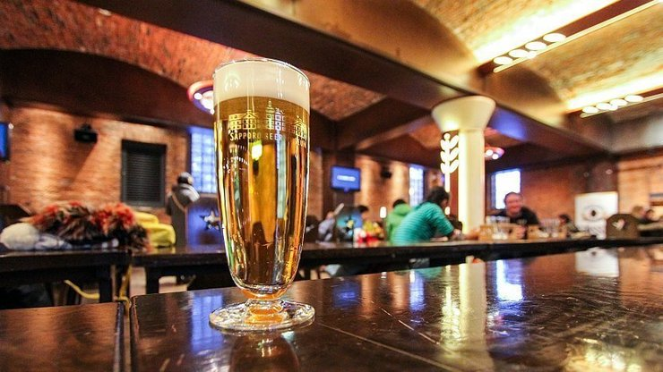

Sapporo Beer Museum
サッポロビール博物館
Hokkaido is the birthplace of beer in Japan. Sapporo Beer, one of the oldest and most popular beer brands in the country, has been brewed in Sapporo since 1877.
The Sapporo Beer Museum (サッポロビール博物館, Sapporo Beer Hakubutsukan) was opened in 1987 in a former brewery from the Meiji Period. The museum introduces the history of beer in Japan and the process of beer making. After the exhibitions, beer tastings are available at a small fee. Alternatively, paid tours are held in Japanese that include a tasting session at the end.
Next to the museum is the Sapporo Beer Garden, which consists of a few restaurants. Among the restaurants are several, atmospheric beer halls, but also the more sophisticated Garden Grill restaurant. Popular in the beer halls are all-you-can-drink beer and all-you-can-eat mutton BBQ, a popular local dish named after the great Mongolian ruler Genghis Khan (Jingisukan in Japanese).
